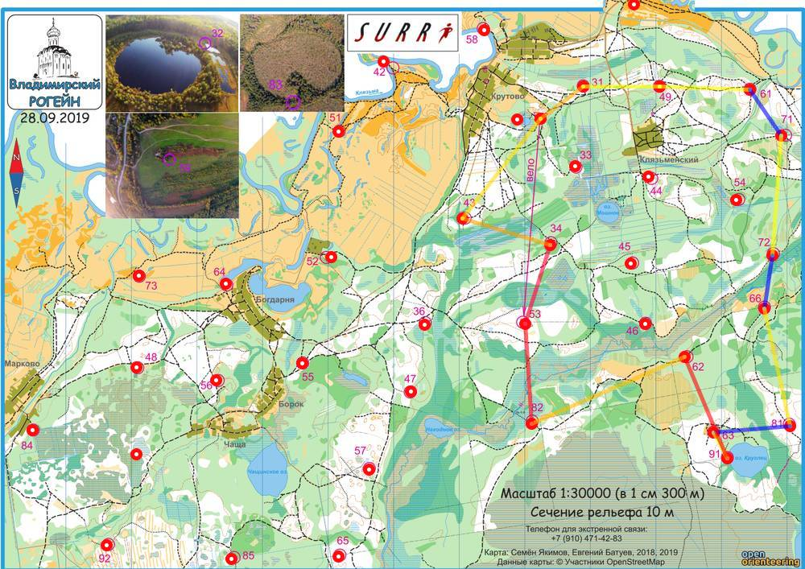

| Команда | Долгопрудный |
| Номер | 148 |
| Участники | Федоров Дмитрий 1984 |
| Группа | м4 |
| Место | 6 |
| Очки | 82 |
| Штраф | 0 |
| Время | 03:55:36 |
| Результат | 82 |
| КП | Время | Сплит | Расстояние, км | Темп, мин/км |
|---|---|---|---|---|
| С | 12:00:00 | |||
| 31 | 12:06:56 | 00:06:56 | 0.808 | 8.6 |
| 49 | 12:13:17 | 00:06:21 | 1.16 | 5.5 |
| 61 | 12:20:43 | 00:07:26 | 1.371 | 5.4 |
| 71 | 20:38:15 | 4592:17:32 | 0.844 | >999 |
| 72 | 12:49:18 | -4592:11:03 | 1.819 | <1 |
| 66 | 13:16:08 | 00:26:50 | 0.823 | 32.6 |
| 81 | 13:29:02 | 00:12:54 | 1.815 | 7.1 |
| 63 | 20:38:06 | 4591:09:04 | 1.176 | >999 |
| 91 | 13:59:57 | -4591:21:51 | 0.446 | <1 |
| 62 | 14:21:43 | 00:21:46 | 1.672 | 13.0 |
| 82 | 14:42:10 | 00:20:27 | 2.535 | 8.1 |
| 53 | 15:05:16 | 00:23:06 | 1.521 | 15.2 |
| 34 | 15:28:55 | 00:23:39 | 1.25 | 18.9 |
| 43 | 15:41:24 | 00:12:29 | 1.395 | 8.9 |
| Ф | 15:55:36 | 00:14:12 | 1.935 | 7.3 |
| 03:55:36 | 18.306 км | 12.9 мин/км |
